DURAFIDE® PPS
폴리페닐렌 설파이드
탁월한 내열성(240 °C), 내약품성 및 기계적 강도를 가진 슈퍼 엔지니어링 플라스틱으로 난연성이 우수합니다.
- GRADE
- 1140A6
- 6150T73
- 6465A62
- APPLICATION
- 모터 인슐레이터, DC-DC 컨버터, 전자 스로틀 바디
폴리넷은 15년 이상 엔지니어링 플라스틱 소재 분야에서 일해 온 화학 소재 공급 기업입니다.
주요 고객은 자동차 부품 제조사이며, 공급량은 PPS, POM, LCP, PBT 순입니다. POM은 비데와 소형 모터 같은 범용 부품에도 폭넓게 공급합니다.
소재 공급에서 끝나지 않고, 용도에 맞는 선택과 양산까지 지원합니다.
POM, PBT, PPS, LCP, COC 등 다이셀의 고성능 엔지니어링 플라스틱을 공급합니다.
고객의 요구에 맞는 최적화된 소재 솔루션을 제안합니다.
전문 엔지니어가 기술 지원과 애플리케이션 개발을 돕습니다.
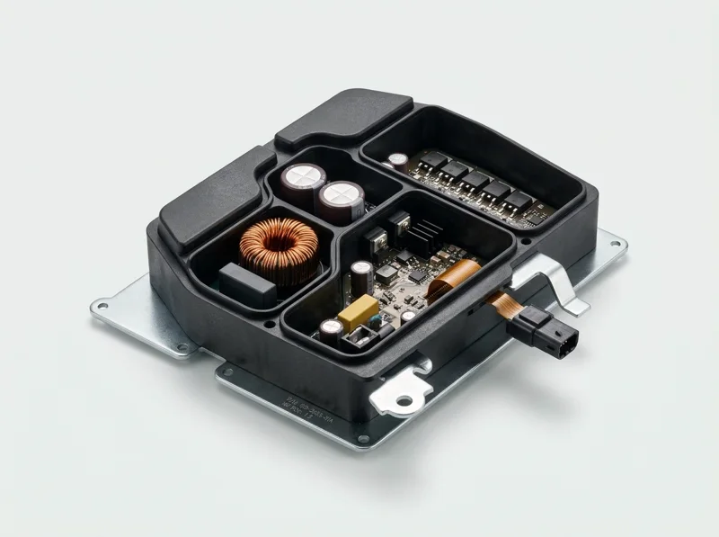
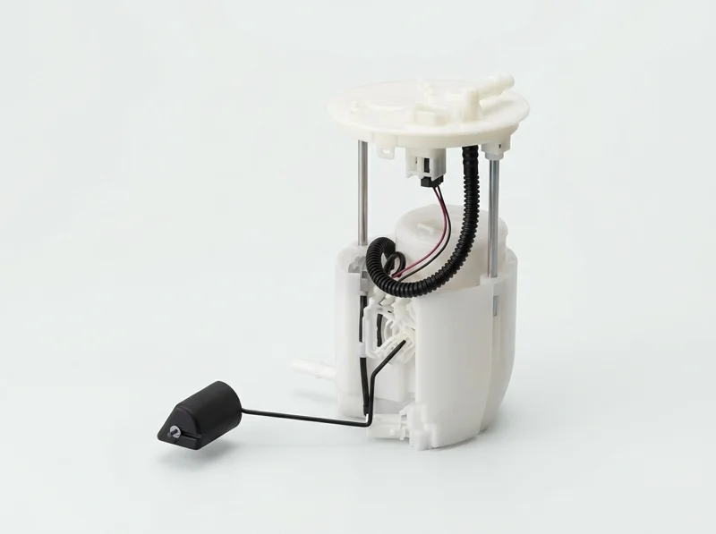
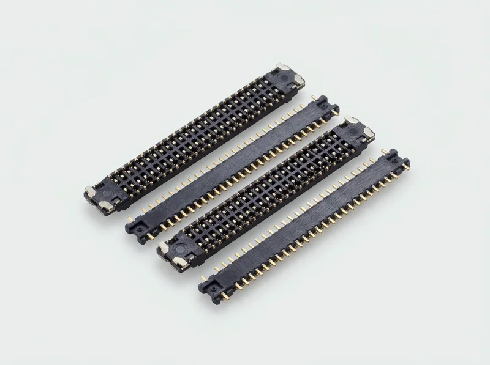
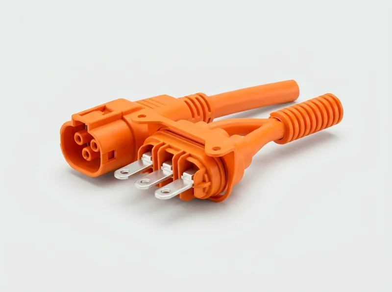
고객사 제품에 들어가는 대표 부품을 소재별로 모았습니다.
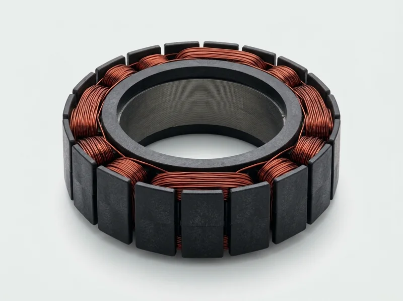
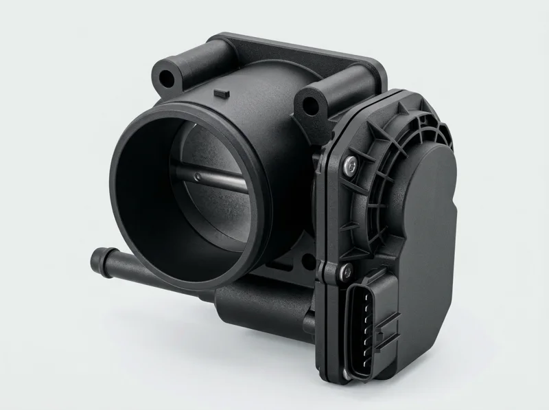
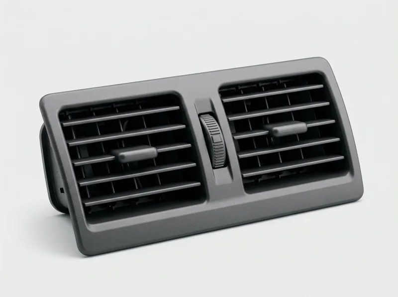
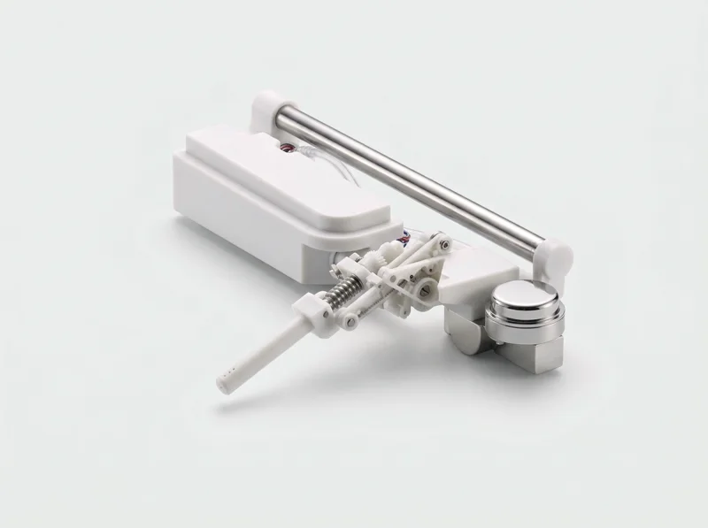
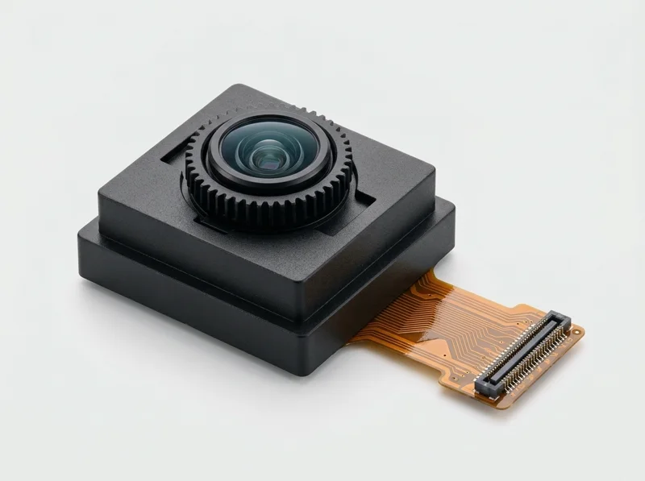
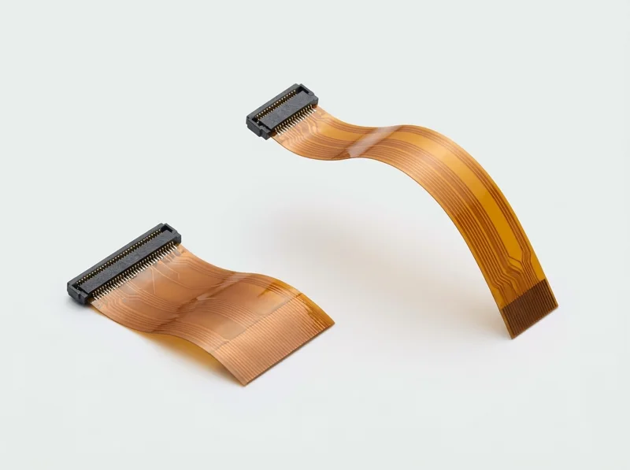
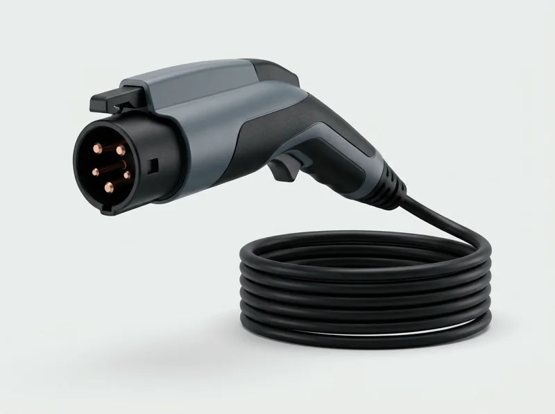
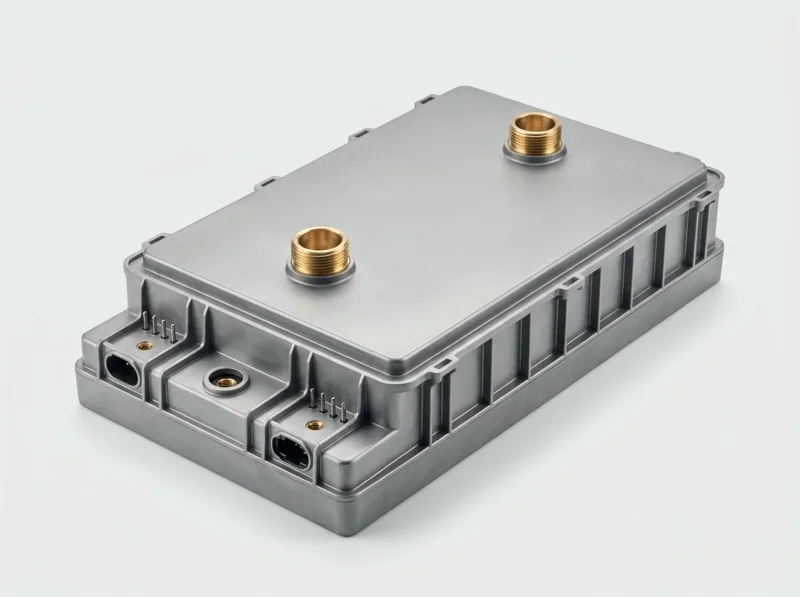
다이셀(구 폴리플라스틱스)의 다섯 브랜드를 취급합니다.
RENATUS® PET, PLASTRON® LFT, DURAST® Powder, SARPEK® PEK, ARLEN™ PA6T, AURUM™ TPI 등 그 밖의 다이셀 제품은 별도로 문의해 주세요.
폴리페닐렌 설파이드
탁월한 내열성(240 °C), 내약품성 및 기계적 강도를 가진 슈퍼 엔지니어링 플라스틱으로 난연성이 우수합니다.
폴리아세탈 (Polyacetal)
우수한 기계적 강도, 강성 및 치수 안정성을 가진 엔지니어링 플라스틱으로 마찰 특성이 뛰어나며 내피로성이 우수합니다.
액정 폴리머
초정밀 성형이 가능한 고성능 열가소성 수지로, 낮은 성형 수축률과 우수한 치수 안정성을 제공합니다.
폴리부틸렌 테레프탈레이트
전기적 특성과 내열성이 우수하며, 치수 안정성과 내약품성이 뛰어난 열가소성 폴리에스터 수지입니다.
사이클릭 올레핀 코폴리머
높은 투명성, 낮은 수분 흡수율 및 우수한 생체 적합성을 가진 투명 플라스틱으로 광학 및 의료 분야에 최적입니다.
제품 문의, 견적 요청, 기술 지원은 메일로 보내 주세요.